Investigating the connectome of a larval Drosophila brain#
Benjamin D. Pedigo#
(he/him) NeuroData lab Johns Hopkins University - Biomedical Engineering
 bpedigo@jhu.edu
bpedigo@jhu.edu
 @bdpedigo (Github)
@bdpedigo (Github)
 @bpedigod (Twitter)
@bpedigod (Twitter)
 bdpedigo.github.io
bdpedigo.github.io
These slides at:#
Many goals of connectomics involve linking the connectome to other properties#
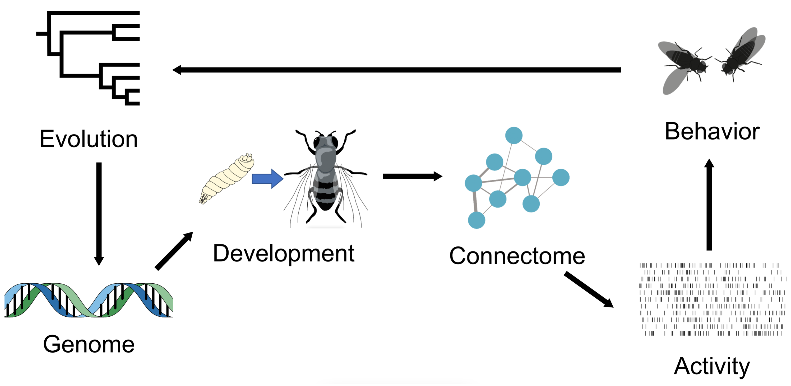
Larval Drosophila allows access to many properties, e.g.,#
Eschbach et al. Nat. Neuro (2020)
Eschbach & Zlatic Curr. Op. Neurobio. (2020)
Klein et al. bioRxiv (2021)
Almeida-Carvalho et al. J. Experimental Bio. (2017)
Mapping a larval Drosophila brain connectome#

Larval Drosophila brain connectome#

~3k neurons, ~550K synaptic sites Both hemispheres

Outline#
Larval connectome dataset#
Flow and edge types
Connectivity-based cell types
Connectome comparison via network hypothesis testing#
Pairing neurons across connectomes via graph matching#
Ongoing extensions/applications#
High level (mostly anatomical) cell types#
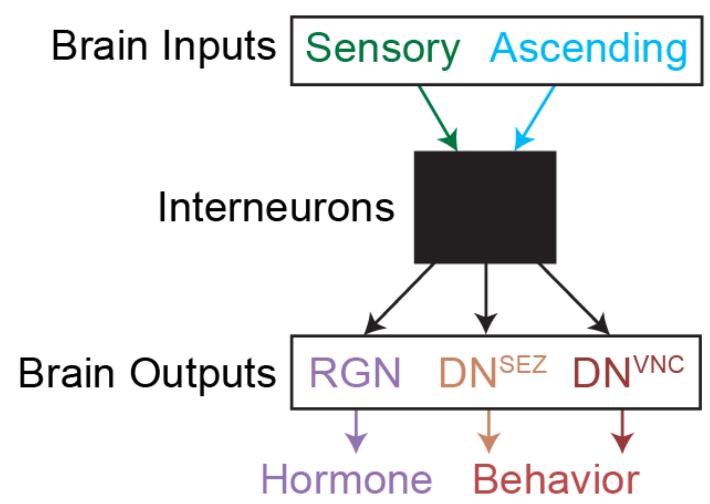
Sorting the network#
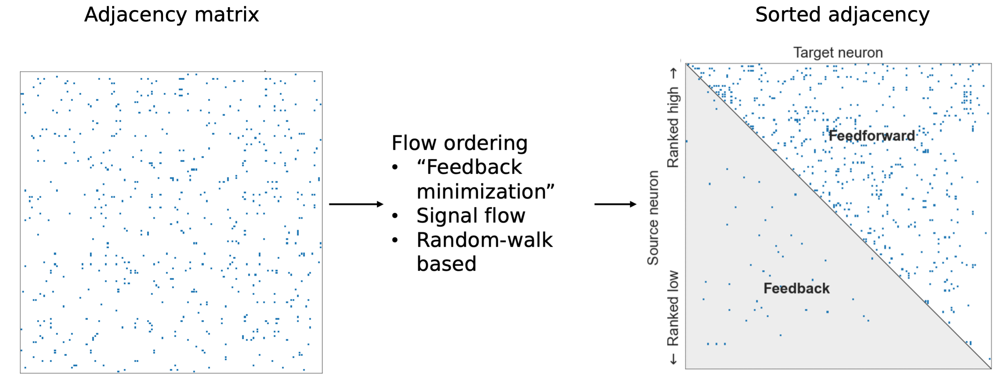
Quantifying high-level “feedforward/feedback”#
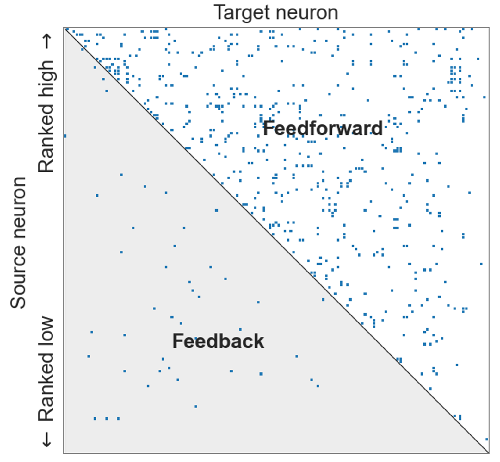
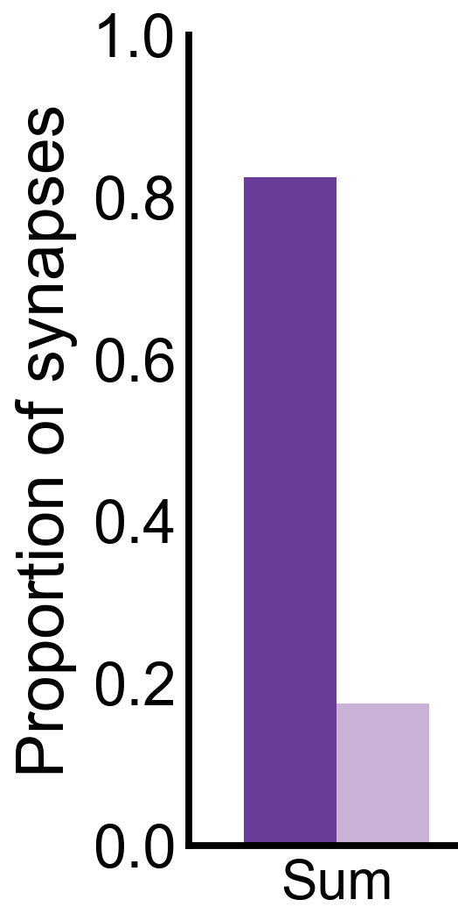
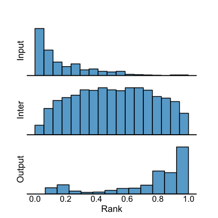
Morphology enables splitting axons/dendrites#

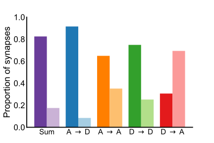
Outline#
Larval connectome dataset#
Flow and edge types
Connectivity-based cell types
Connectome comparison via network hypothesis testing#
Pairing neurons across connectomes via graph matching#
Ongoing extensions/applications#
Stochastic block model#
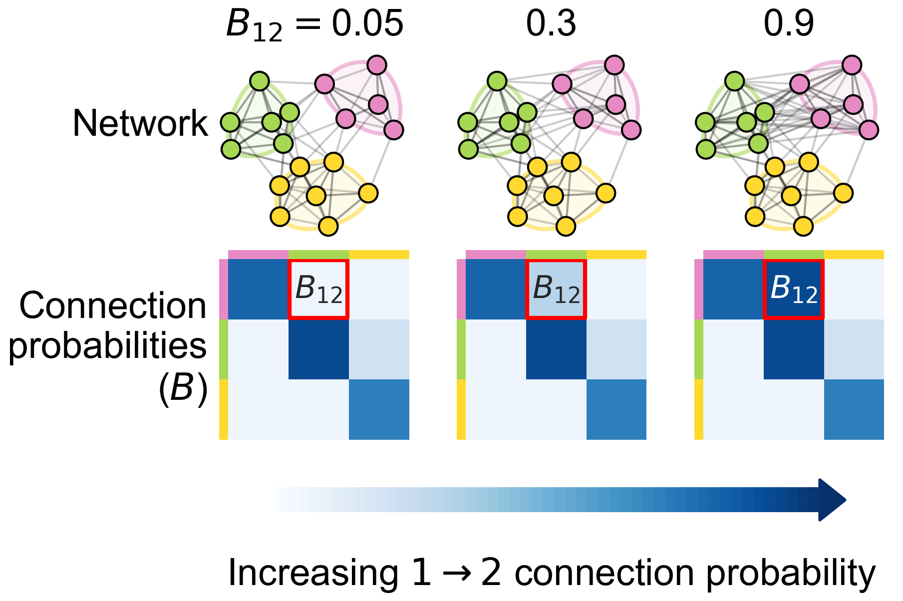
Each node is assigned to a group
\(B\) is a matrix of connection probabilities between groups
Edges generated independently according to these probabilities
Spectral embedding#
Spectral decomposition of the adjacency matrix (or Laplacian)
Clustering on this representation is a consistent estimator of block model labels
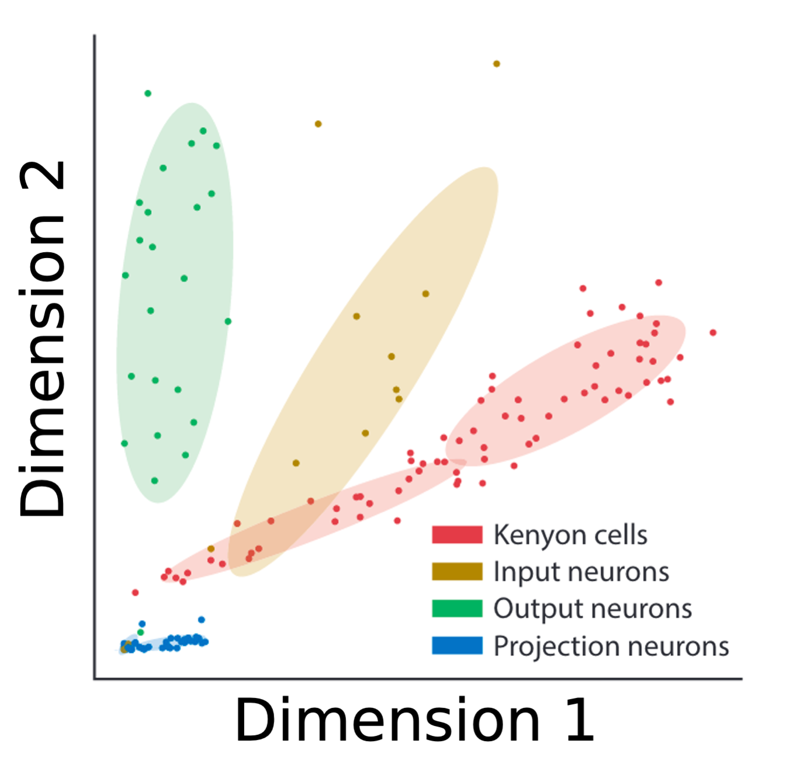
Neurons clustered by connectivity using recursive spectral clustering#


Cluster morphology#
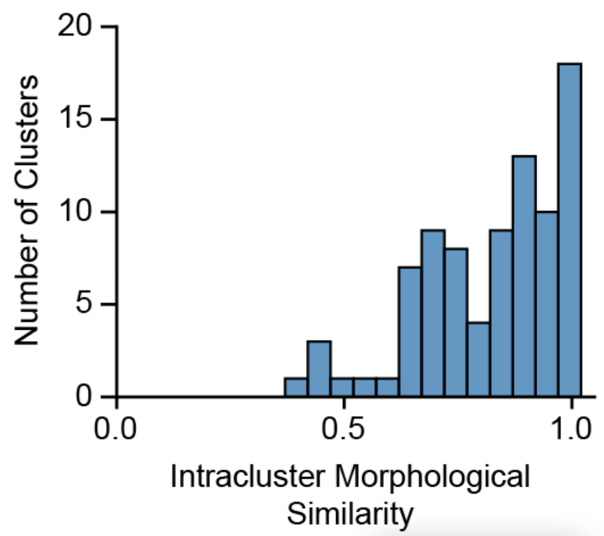
Discriminability:#
\(P[\) within cluster NBLAST sim. \(>\) between cluster NBLAST sim. \(] \approx 0.81\)
Using models to evaluate cell type groupings#
How well do these models generalize to the other side of the brain (let alone the next maggot)?

Bilateral symmetry#
“This brain is bilaterally symmetric.”
“What does that even mean? And how would we know if it wasn’t?”
Are the left and right sides of this connectome
different?#
Outline#
Larval connectome dataset#
Connectome comparison via network hypothesis testing#
Pairing neurons across connectomes via graph matching#
Ongoing extensions/applications#
Are these populations different?#

Known as two-sample testing
\(\color{#66c2a5} Y^{(1)} \sim F^{(1)}\), \(\color{#fc8d62} Y^{(2)} \sim F^{(2)}\)
\(H_0: \color{#66c2a5} F^{(1)} \color{black} = \color{#fc8d62} F^{(2)}\)
\(H_A: \color{#66c2a5} F^{(1)} \color{black} \neq \color{#fc8d62} F^{(2)}\)
Are these networks different?#

Want a two-network-sample test!
\(A^{(L)} \sim F^{(L)}\), \(A^{(R)} \sim F^{(R)}\)
\(H_0: \color{#66c2a5} F^{(L)} \color{black} = \color{#fc8d62}F^{(R)}\)
\(H_A: \color{#66c2a5} F^{(L)} \color{black} \neq \color{#fc8d62} F^{(R)}\)
Assumptions#
Know the direction of synapses, so network is directed
For simplicity (for now), consider networks to be unweighted
For simplicity (for now), consider the left \(\rightarrow\) left and right \(\rightarrow\) right (ipsilateral) connections
Not going to assume any nodes are matched

Erdos-Renyi model#
All edges are independent
All edges generated with the same probability, \(p\)

Detect a difference in density#


p-value < \(10^{-22}\)
Connection probabilities between groups#
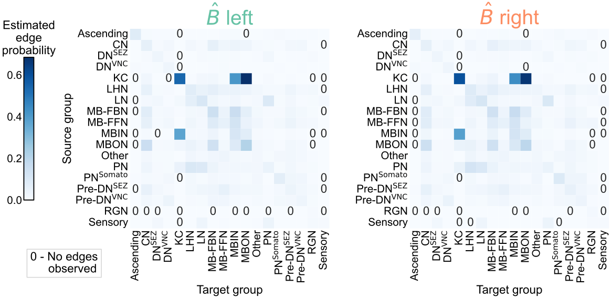
Group connection test#

Detect differences in group connection probabilities#

6 group-to-group connections are significantly different (after multiple comparisons correction)
Overall test (comparing all blocks):
p-value \(<10^{-7}\)
Should we be surprised?#
Already saw that even the overall densities were different
For all significant comparisons, probabilities on the right hemisphere were higher
Maybe the right is just a “scaled up” version of the left?
\(H_0: \color{#66c2a5}B^{(L)} \color{black} = c \color{#fc8d62}B^{(R)}\)
where \(c\) is a density-adjusting constant, \(\frac{\color{#66c2a5} p^{(L)}}{\color{#fc8d62} p^{(R)}}\)

After adjusting for density, differences are in KCs#


Overall p-value: \(<10^{-2}\)
To sum up…#
“This brain is bilaterally symmetric.”
Depends on what you mean…
With Kenyon cells#
Model |
\(H_0\) (vs. \(H_A \neq\)) |
p-value |
|---|---|---|
ER |
\(\color{#66c2a5} p^{(L)} \color{black} = \color{#fc8d62}p^{(R)}\) |
\({<}10^{-23}\) |
SBM |
\(\color{#66c2a5} B^{(L)} \color{black} = \color{#fc8d62} B^{(R)}\) |
\({<}10^{-7}\) |
daSBM |
\(\color{#66c2a5}B^{(L)} \color{black} = c \color{#fc8d62}B^{(R)}\) |
\({<}10^{-2}\) |
Without Kenyon cells#
Model |
\(H_0\) (vs. \(H_A \neq\)) |
p-value |
|---|---|---|
ER |
\(\color{#66c2a5} p^{(L)} \color{black} = \color{#fc8d62}p^{(R)}\) |
\({<}10^{-26}\) |
SBM |
\(\color{#66c2a5} B^{(L)} \color{black} = \color{#fc8d62} B^{(R)}\) |
\({<}10^{-2}\) |
daSBM |
\(\color{#66c2a5}B^{(L)} \color{black} = c \color{#fc8d62}B^{(R)}\) |
\(\approx 0.51\) |
Examining the effect of edge weights#


Even high synapse count networks show asymmetry#
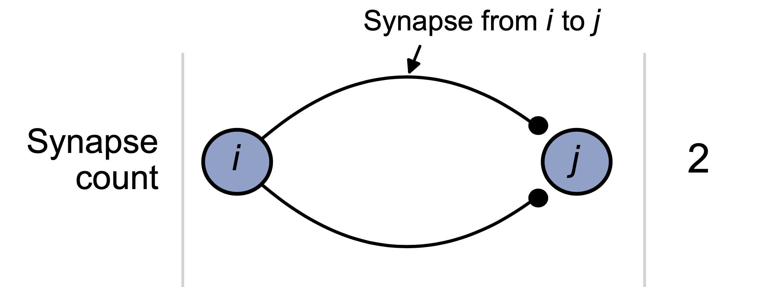

High input percentage networks show no asymmetry#
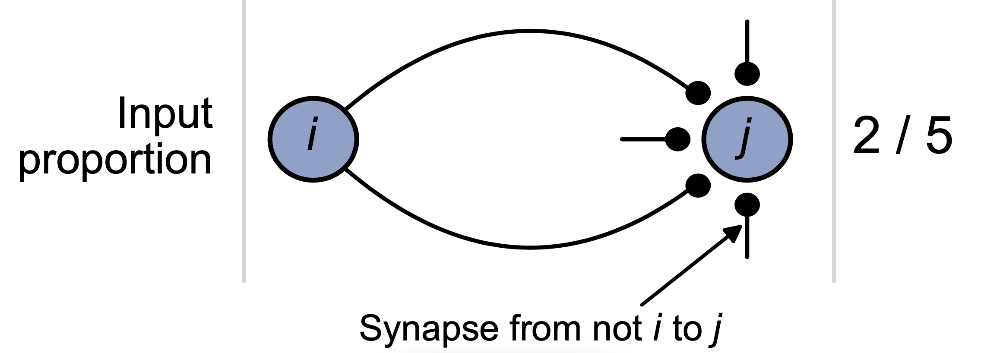

Outline#
Larval connectome dataset#
Connectome comparison via network hypothesis testing#
Pairing neurons across connectomes via graph matching#
Ongoing extensions/applications#
Bilaterally homologous neuron pairs#
We believe a matching exists!

What is graph matching?#

How do we measure network overlap?#
\(\min_{P \in \mathcal{P}} \underbrace{\|A_1 - \overbrace{PA_2P^T}^{\text{reordered } A_2}\|_F^2}_{\text{distance between adj. mats.}}\)#
where \(\mathcal{P}\) is the set of permutation matrices
Measures the number of edge disagreements for unweighted networks,
Norm of edge disagreements for weighted networks
How do we do graph matching?#
Relax the problem to a continuos space
Convex hull of permutation matrices
Minimize a linear approximation of objective function (repeat)
Project back to the closest permutation matrix
Matching (by connectivity only) performs fairly well#

With “vanilla” graph matching: ~80% correct (according to expert annotator)
Many ways to try to improve on this…#
Edge types allow for “multilayer” graph matching
Partial knowledge of the matching (seeds)
Morphology (e.g. NBLAST)
Thus far, we’ve not used the contralateral connections#
These are about 1/3 of the edges in the brain!#
From graph matching to bisected graph matching#

Contralateral connections are helpful!#

Performance improvement on the full brain#
Outline#
Larval connectome dataset#
Connectome comparison via network hypothesis testing#
Pairing neurons across connectomes via graph matching#
Ongoing extensions/applications#
Comparative connectomics#
Map connectomes from related individuals/organisms which may differ in feature \(X\)
Compare connectomes
Understand how \(X\) {affects, is affected by, is associated with} connectome structure
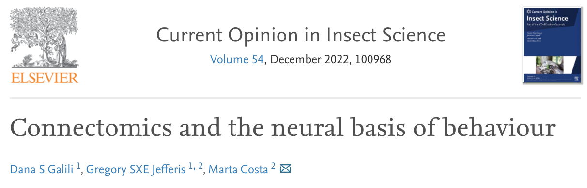
Comparative connectomics across experience, sex and species is a key next step.
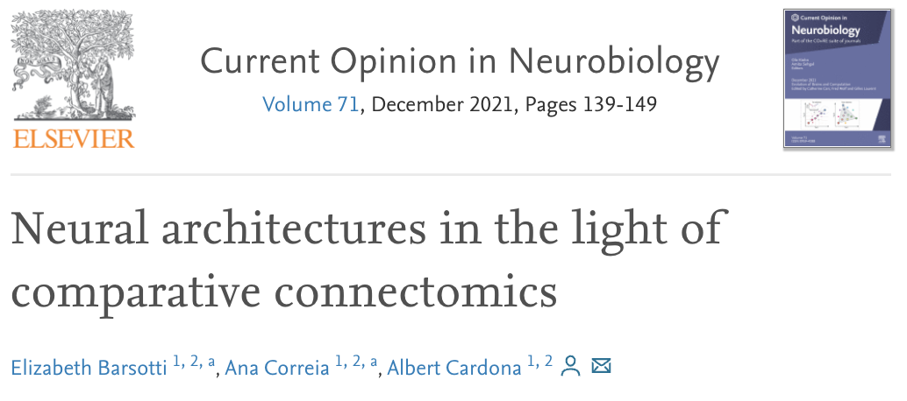
With comparative connectomics, the search for neural circuit architectures common across species or independently converged into an optimal layout is now possible.
Why is comparative connectomics hard?#
Collecting the data is still a large effort…
But how do we even compare connectomes once we have them?
How do we know whether a proposed experiment could even hope to answer our questions? How powerful is comparative connectomics?#
A hypothetical difference we want to detect…#
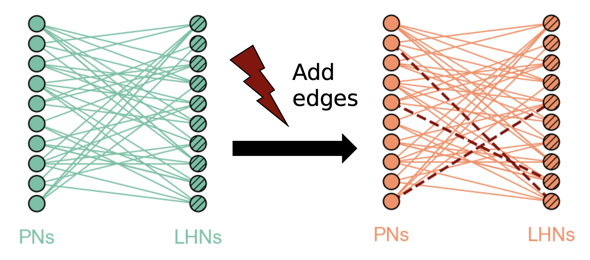
Start from some subgraph in the connectome, \(A\)
Perturb a copy of it, \(B\) (add edges)
Test for differences between \(A\) and \(B\)
Pairs facilitate more powerful tests#

Summary#
Characterized “feedforwardness” of this connectome
Estimated cell types by connectivity

Model-based network comparison enables testing (and refining) hypotheses about connectomes

Graph matching can pair neurons across datasets
Aim to apply these (and other) tools to: - Inform the design of future comparative experiments, - Make inferences from connectome comparisons!
References#
Code#


github.com/neurodata/maggot_models
github.com/neurodata/bilateral-connectome
github.com/neurodata/bgm
Acknowledgements#
Team#
 Michael Winding
Michael Winding
 Mike Powell
Mike Powell
Eric Bridgeford
 Ali
Ali
Saad-Eldin
 Marta Zlatic
Marta Zlatic
Albert Cardona
 Carey Priebe
Carey Priebe
Joshua Vogelstein
Tracers who contributed to larva connectome, Heather Patsolic, Youngser Park, NeuroData lab, Microsoft Research Figures from Scidraw + Noun Project (Alexander Bates, Xuan Ma, Gil Costa, Vivek Kumar, Leslie Coonrod)
Funding#
NSF Graduate Research Fellowship (B.D.P.), NSF CAREER Award (J.T.V.), NSF NeuroNex Award (J.T.V and C.E.P.), NIH BRAIN Initiative (J.T.V.)
Questions?#